Cerrar Vista
Un análisis sobre la autoridad, la ambición y el juicio divino
Coré, junto a Datán y Abiram, lideraron a 250 hombres de renombre contra Moisés y Aarón, cuestionando la jerarquía espiritual establecida.
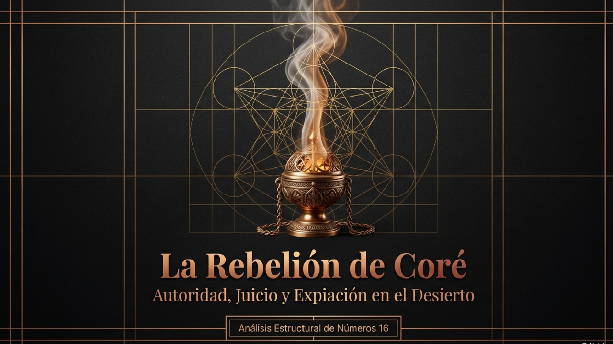
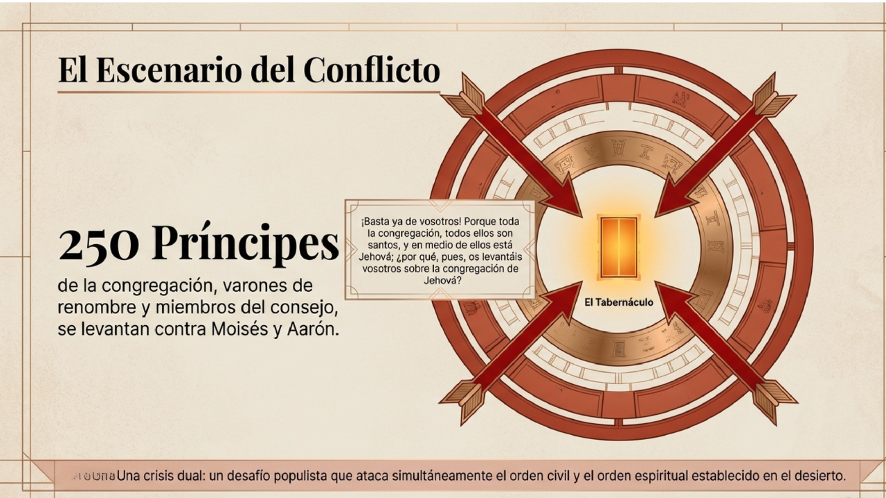
El deseo por el sacerdocio y la nostalgia por Egipto nublaron el juicio de los rebeldes, ignorando el propósito divino en el desierto.
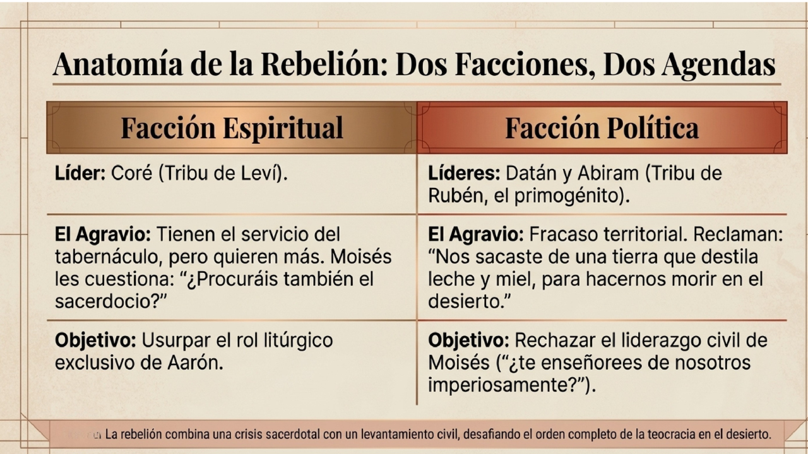
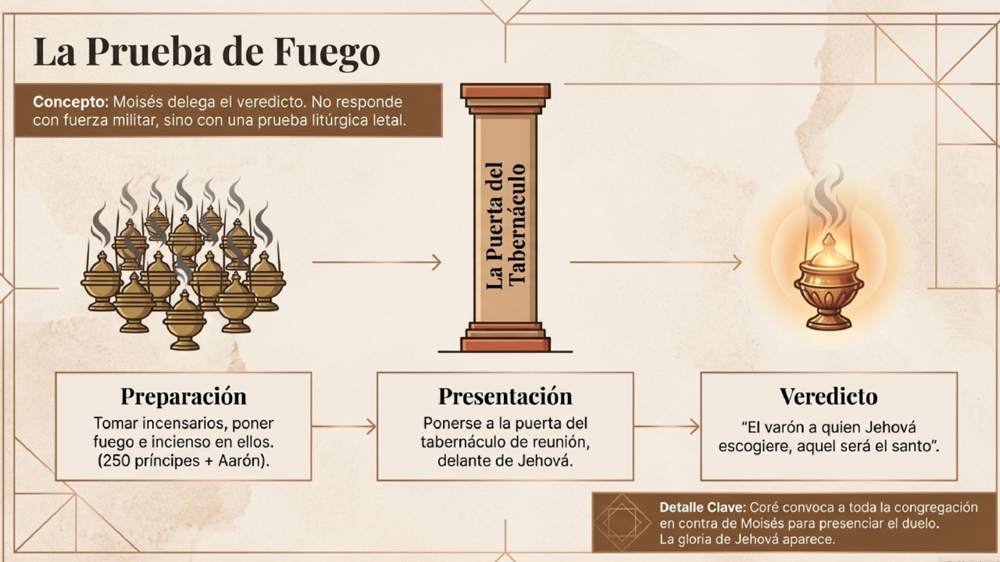
Cada hombre tomó su incensario. La gloria de Jehová apareció para definir quién era verdaderamente santo ante Su presencia.
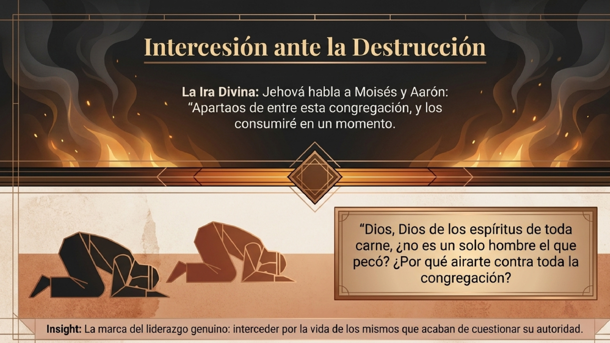
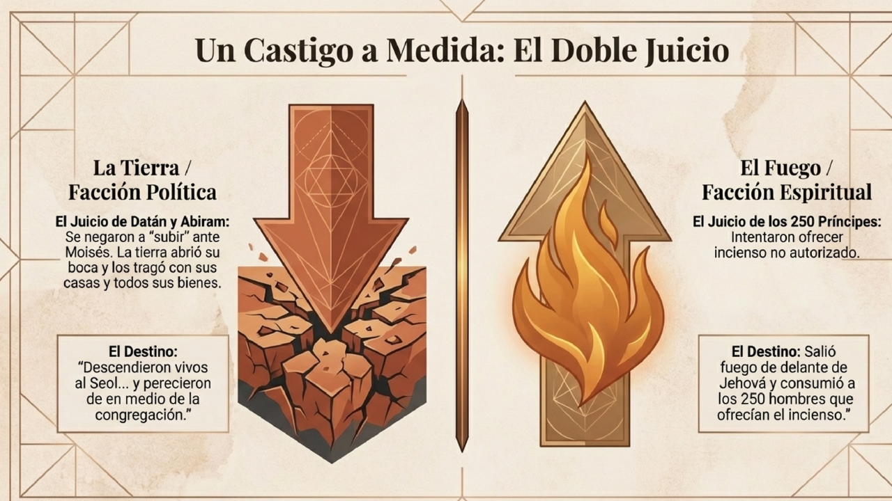
La tierra se abrió y el fuego consumió a los rebeldes. Un recordatorio drástico de la santidad de Dios y Su orden.
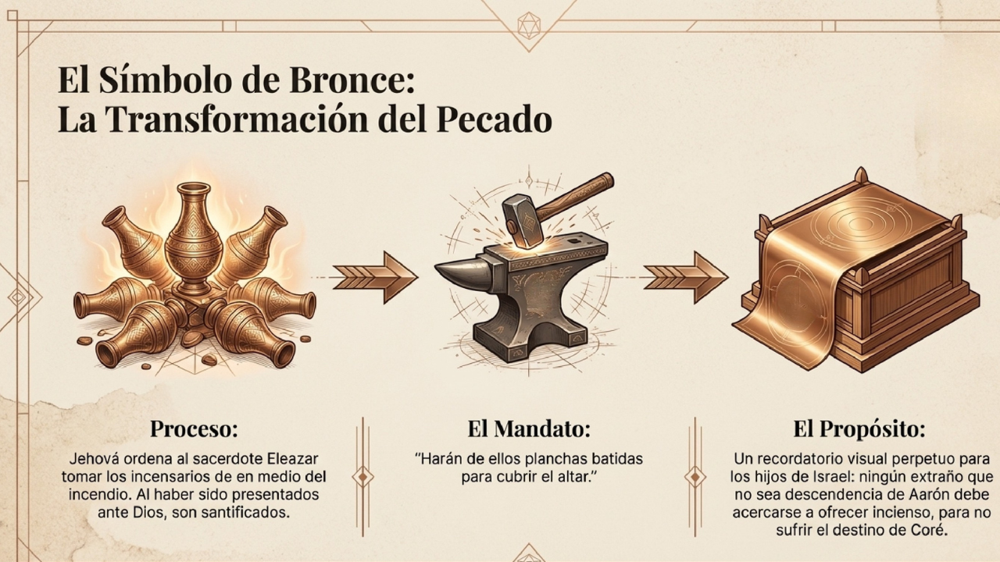
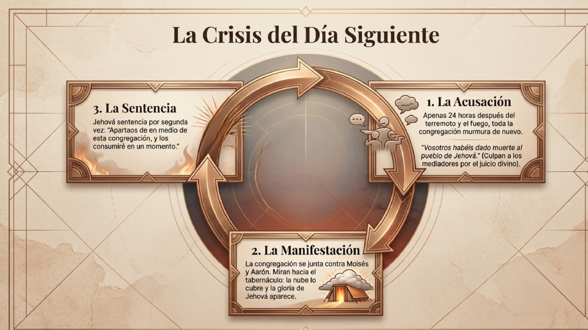
Aarón se puso entre los muertos y los vivos. Los incensarios fueron transformados en planchas para el altar como señal perpetua.
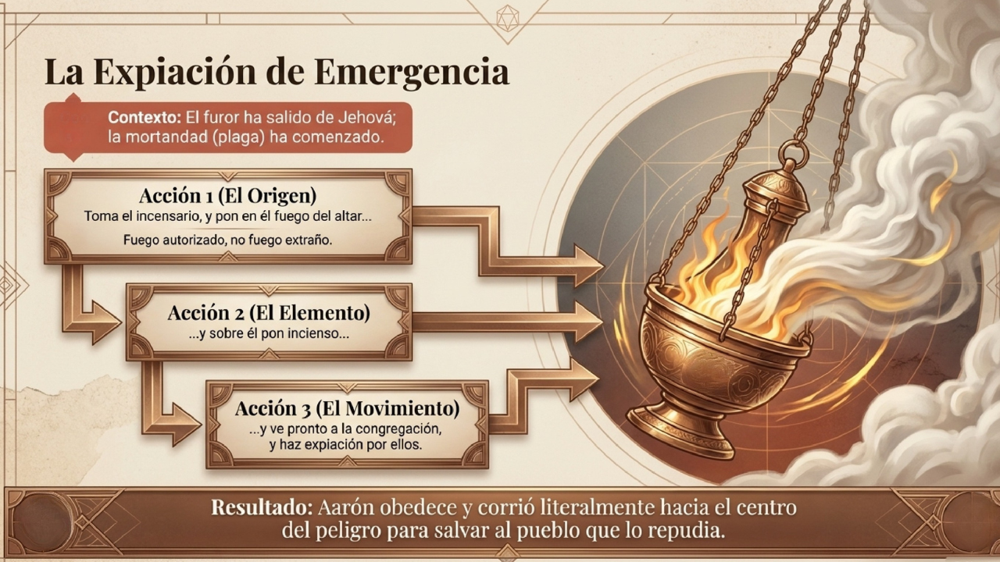
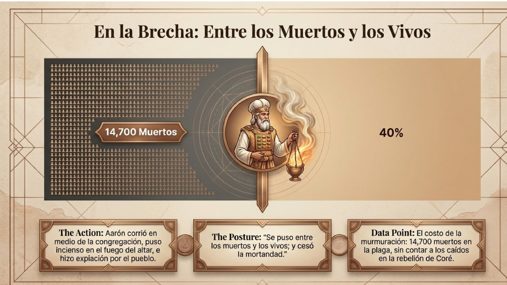
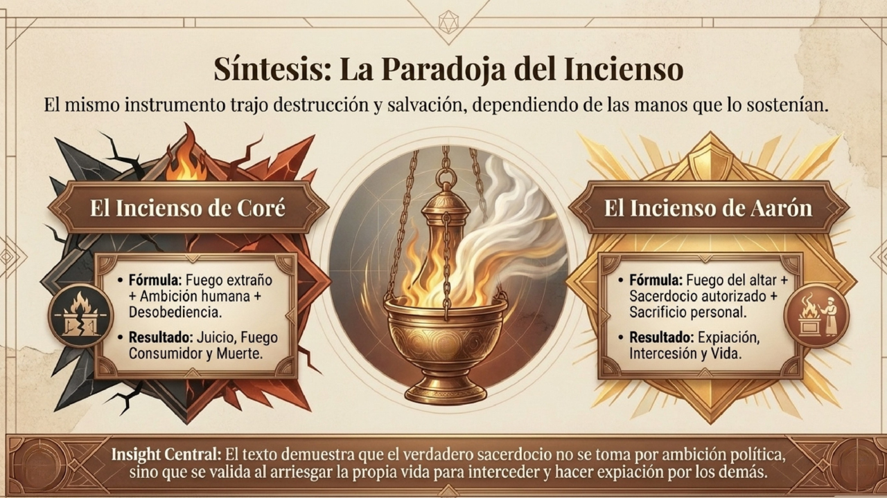